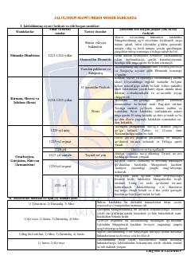

JMBuyuk sarkarda Jaloliddin Manguberdining hayoti va harbiy yurishlari haqida tarixiy risola.
Ushbu kitob buyuk sarkarda va davlat arbobi Jaloliddin Manguberdining siyosiy faoliyati, mo'g'ullarga qarshi olib borgan shafqatsiz urushlari va tarixiy sanalarni yoritadi. Unda sultonga qarshi qilingan siyosiy to'siqlar, janglar va uning fojiali so'nggi yillari haqida ma'lumotlar keltirilgan. Asar tarix ixlosmandlari uchun muhim manba vazifasini o'taydi.